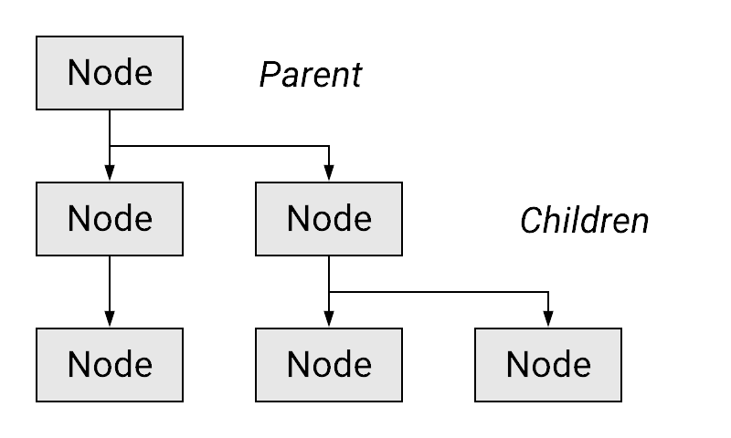

Beranda
Halo semuanya! Selamat datang di situs web mata kuliah Game Development yang diselenggarakan di Fakultas Ilmu Komputer Universitas Indonesia.
Tutorials ↵
Tutorial 1 - Game Design Workshop
Selamat datang di tutorial pertama kuliah Game Development! Pada tutorial perdana ini, kamu akan mulai diajak membiasakan diri dengan platform pelaksanaan tutorial selama satu semester ini, yaitu menggunakan GitHub. Selanjutnya, kamu akan diajak untuk menyimulasikan proses perancangan game dalam waktu singkat bermodalkan sebuah tema abstrak, kertas, dan alat tulis. Di akhir tutorial ini, kamu diharapkan sudah siap mengikuti kegiatan tutorial-tutorial berikutnya dan mendapatkan gambaran proses perancangan game secara sederhana.
Catatan: Jika kamu sudah ingin programming dan menggunakan game engine, harap bersabar. Tutorial menggunakan game engine secara resmi baru akan dimulai pekan depan.
Daftar Isi
Logistik Tutorial
Seperti yang telah disebutkan sebelumnya, tutorial kuliah Game Development akan menggunakan GitHub. GitHub akan digunakan sebagai repositori kode templat dan hasil pengerjaan tutorial.
Jika kamu belum memiliki akun GitHub, maka silakan gunakan waktu di awal tutorial ini untuk mendaftarkan diri terlebih dahulu di GitHub. GitHub yang digunakan dalam kuliah ini adalah GitHub.com.
Catatan: Kamu belum pernah pakai Git? Atau lupa cara pakainya? Silakan ikuti tutorial penggunaan Git di situs Atlassian.
Pranala untuk masuk ke server Discord kuliah Game Development dapat dilihat di
Scele. Silakan masuk ke server, lalu pahami tata tertib di server dan ambil
role Mahasiswa.
Game Design Sederhana
Harap persiapkan hal-hal berikut sebelum memulai kegiatan:
- Dokumen Microsoft Word/Google Docs kosong untuk menuliskan jawaban
- Satu lembar kertas kosong berukuran maksimal A4
- Alat tulis
- Kamera/scanner untuk mengambil foto corat-coret (tulisan, gambar) di kertas
Pada kuliah Game Development ini, kamu akan dilatih untuk berpikir dan menyelesaikan masalah dengan pendekatan yang bisa dibilang agak out-of-the-box. Kuliah ini bukan seperti kuliah pemrograman-pemrograman dasar yang mengharuskan peserta kuliah membuat program untuk mengolah masukan dan mencetak keluaran sama persis seperti yang tercantum di dokumen spesifikasi tugas. Kebenaran dan kesesuaian dengan spesifikasi memang penting, namun kuliah ini juga mengharapkan solusi yang unik dan kreatif.
Salah satu kegiatan kreatif yang akan disimulasikan hari ini adalah proses pencarian ide dalam merancang game. Mungkin beberapa dari peserta kuliah sudah memiliki ide game yang ingin dikembangkan pada kuliah ini. Mungkin ada juga peserta kuliah yang masih mencari-cari ide. Terlepas apakah sudah ada ide atau belum, mari kita coba bersama latihan berikut untuk merancang sebuah game!
Pertama, coba kita saling sharing terlebih dahulu. Jawab pertanyaan-pertanyaan berikut dan berbagi jawabannya dengan rekan-rekan sekelas:
- Pertanyaan 1: Apakah kamu punya game favorit? Coba deskripsikan secara singkat!
- Pertanyaan 2: Apakah game tersebut masih dimainkan? Mengapa?
Pertanyaan 3: Apa hal berkesan ketika memainkan game tersebut?
Instruksi kepada asisten: Silakan fasilitasi diskusi selama 10 menit. Tunjuk 1 - 3 mahasiswa secara acak untuk sharing selama 5 menit. Asisten juga boleh sharing game favoritnya.
- Instruksi kepada peserta kuliah: Silakan tulis jawaban pertanyaan 1 - 3 di Microsoft Word/Google Docs. Jawaban boleh dituliskan dalam format bullet points.
Apapun game yang pernah rekan-rekan mainkan, setiap game memiliki player experience goal yang ingin disampaikan oleh perancang game (game designer) kepada pemain. Sebagai contoh:
- Ada game yang dirancang untuk membuat pemain bekerjasama untuk memenangkan tantangan, namun pada saat yang bersamaan harus tetap waspada terhadap sesama pemain lainnya (misal: Project Winter, Among Us, Werewolf).
- Ada game yang ingin memberikan sensasi kebebasan untuk menyelesaikan tujuan-tujuan di dalam game tanpa terkekang oleh urutan penyelesaiannya (misal: game-game open-world, seperti The Legend of Zelda: Breath of the Wild).
- Ada game yang ingin memberikan kesempatan kepada pemain untuk berimajinasi dan bermain peran sebagai seorang tokoh di dalam dunia fantasi (misal: game-game role-playing game (RPG) seperti Final Fantasy dan The Legend of Heroes (Trails series), game-game dengan sudut pandang orang pertama (first-person) seperti Ace Combat, Call of Duty, dan Half-Life).
Instruksi kepada asisten: Silakan jika mau menambahkan contoh lain. Mungkin bisa dari contoh game populer yang terakhir kali kalian mainkan.
Untuk mencapai experience yang diinginkan, maka game designer akan merancang elemen-elemen pada game yang akan saling bersinergi untuk membuat pemain mencapai experience tersebut. Elemen-elemen dasar pada permainan dapat mengacu ke buku Fullerton "Game Design Workshop: A Playcentric Approach" (i.e., elemen formal, elemen dramatis, dinamika sistem) dan/atau buku Schell "The Art of Game Design" (i.e., estetika, teknologi, cerita, mekanik).
Di tutorial ini, kita coba mulai sederhana dulu, yaitu dari segi cerita dan mekanik permainan. Misalnya, kamu diminta untuk merancang sebuah game dengan ide abstrak sebagai berikut: "Balapan dari sebuah tempat asal ke tempat tujuan."
Pertanyaan 4: Coba kamu pikirkan sebuah experience yang ingin kamu tanamkan kepada pemain ketika pemain tersebut memainkan game "balapan" ini.
Instruksi kepada asisten: Berikan waktu 10 menit kepada peserta untuk berpikir dan menuliskan idenya. Kemudian tunjuk 1 - 3 mahasiswa secara acak untuk sharing idenya selama 5 menit.
Instruksi kepada peserta kuliah: Silakan tulis jawaban pertanyaan 4 di Microsoft Word/Google Docs.
Pertanyaan 5: Saatnya kamu pakai kertas kosong. Gambarkan dua buah titik di kertas, misalnya titik A dan titik B. Posisi kedua titik ini diharapkan cukup jauh di atas kertas.
- Pertanyaan 6: Gambarlah sebuah garis yang menghubungkan titik A dan titik B. Garisnya boleh lurus, berlika-liku, putus-putus, dan lain-lain. Silakan berkreasi.
- Pertanyaan 7: Bayangkan sebuah cerita yang dapat terjadi ketika ada balapan dari sebuah tempat asal ke tempat tujuan. Usahakan cerita masih ada kaitan dengan experience yang telah dituliskan sebelumnya. Beberapa pertanyaan pemicu yang dapat membantu menuliskan ide cerita:
- Siapa tokoh utama (protagonis) dalam cerita balapan?
- Siapa tokoh lawan (antagonis) dalam cerita balapan?
- Mengapa mereka balapan? Apakah untuk mendapatkan hadiah? Menyelamatkan putri yang diculik? Atau sekedar iseng?
- Dimana dan kapan balapan ini terjadi? Apakah di dunia pertengahan abad 15? Di luar angkasa? Di dalam tubuh? Atau di tempat dan waktu lainnya?
- Apa alat yang akan digunakan oleh tokoh-tokoh di dunia cerita ini ketika balapan? Apakah menggunakan pesawat terbang? Kapal? Organ tubuh? Monster atau tunggangan?
- Pertanyaan 8: Gambarkan, dalam bentuk sketsa gambar atau bullet points tulisan, gambaran visual dari dunia cerita pada kertas. Jangan lupa untuk dikaitkan dengan experience yang diinginkan. Misal: bila balapan terjadi di dunia abad pertengahan, mungkin kamu bisa menggambarkan kastil di titik A dan B, lalu ada gambar hutan dan sungai di sepanjang garis yang menghubungkan titik A dan B. Gunakan imajinasimu!
Pertanyaan 9: Deskripsikan bagaimana apa saja aksi dan aturan permainan yang perlu diketahui oleh pemain ketika bermain game balapan ini. Apakah nanti pemain akan bergiliran untuk menggerakkan kendaraannya? Atau bergerak secara real-time? Apakah akan ada kondisi tertentu yang membuat pemain atau lawannya memiliki keuntungan selama bermain? Apakah akan ada semacam objek atau kekuatan spesial yang bisa dipakai pemain/lawan? Silakan berkreasi!
Instruksi kepada asisten: Silakan fasilitasi diskusi dan pengerjaan selama 45 menit. Kemudian tunjuk 1 - 3 mahasiswa secara acak untuk sharing selama 5 menit.
- Instruksi kepada peserta kuliah: Silakan tulis dan ilustrasikan jawaban-jawaban dari pertanyaan 5 - 9 di selembar kertas. Boleh bolak-balik atau menambah kertas apabila ruang kosong di kertas tidak cukup untuk menampung ide kamu. Jawaban juga boleh langsung dimasukkan langsung ke dokumen Microsoft Word/Google Docs jika membuat sketsa secara digital.
Di akhir tutorial ini, kurang lebih kamu telah menempuh proses kilat dalam merancang sebuah game. Tentu saja proses yang lebih rinci akan kamu tempuh ketika mengerjakan proyek kelompok di kuliah ini. Masih ada beberapa hal yang belum sempat didiskusikan melalui sesi tutorial ini, seperti:
- Platform dan teknologi yang akan digunakan dalam membuat dan memainkan game ini, seperti PC, smartphone, console.
- Kebutuhan akan aset-aset digital seperti gambar, suara, musik, model 3D, dan sebagainya.
- Target pasar dan demografi pemain yang akan memainkan game.
- Perencanaan proyek dan fase-fase pengerjaan game.
- Dan lain-lain.
Jika masih penasaran, silakan finalisasi pengisian IRS di SIAK dan selamat bergabung di kuliah Game Development!
Pengumpulan
Harap kumpulkan:
- Dokumen PDF berisi jawaban tertulis latihan-latihan selama tutorial, termasuk scan/foto corat-coret kertas di slot pengumpulan khusus hasil tutorial di Scele.
Tenggat waktu pengumpulan adalah 7 Februari 2024 pukul 21:00.
Tutorial 2 - Introduction to Game Engine
Selamat datang pada tutorial kedua kuliah Game Development! Pada tutorial kali ini, kamu akan berkenalan dengan game engine Godot dan mencoba memahami fitur-fitur dasar Godot secara singkat. Di akhir tutorial ini, diharapkan kamu paham dengan penggunaan Godot Editor, penerapan konsep node dan scene, dan menyimpan hasil tutorialnya di sebuah repositori Git daring.
Sekadar mengingatkan, pastikan kamu:
- Telah mengunduh dan memasang Godot v3.5.3 edisi Standard sesuai dengan development environment yang kamu gunakan.
- Telah menjadi anggota kelompok tugas proyek akhir.
Daftar Isi
- Tutorial 2 - Introduction to Game Engine & Version Control
- Daftar Isi
- Pengantar
- Persiapan Awal
- Antarmuka Godot Editor
- Konsep Node dan Scene
- Inspeksi Node dan Scene
- Latihan: Playtest
- Latihan: Memanipulasi Node dan Scene
- Latihan Mandiri: Membuat Level Baru
- Pengumpulan
- Referensi
Pengantar
Tutorial ini disusun dengan mengambil beberapa referensi dari dokumentasi resmi Godot v3.5 dimana kamu akan mengikuti instruksi-instruksi di dalam dokumen ini untuk mengenal game engine Godot dan menggunakannya untuk membuat sebuah game sangat sederhana. Namun beberapa gambar yang ada di tutorial ini diambil dari Godot v3.1.1. Jadi nanti ikuti tutorialnya harap teliti ya, bisa jadi ada sedikit tulisan yang berbeda antara perintah yang diberikan dan gambar visualisasinya. Terakhir, mungkin masih ada yang bertanya-tanya: "Mengapa harus belajar menggunakan game engine seperti Godot, Unity, atau Unreal, untuk membuat game?"
Salah satu jawaban singkat dari pertanyaan di atas adalah software/component reuse. Dengan menggunakan game engine, pengembang game tidak harus mengimplementasikan ulang komponen-komponen penting di dalam game, seperti game loop, audio system, AI, graphics/rendering system, UI, dan lain-lain. Game engine menyediakan komponen siap pakai dan memberikan keleluasaan bagi pengembang untuk mengimplementasikan hingga mengubah komponen yang ada sesuai dengan kebutuhan.
Game engine pada umumnya juga menyediakan editor yang perannya seperti IDE (Integrated Development Environment) yang biasa kamu gunakan di kuliah-kuliah pemrograman lainnya. Dalam hal ini, kemampuan editor dalam game engine tidak hanya sekadar sebagai text editor. Editor dalam game engine dapat digunakan juga untuk membuat aset, manajemen aset, hingga melakukan komposisi aset ke dalam dunia game. Hal ini yang akan kamu lihat dan coba lakukan di dalam tutorial ini.
Singkat kata, atau TL;DR: Game engine akan mempermudah proses implementasi game.
Persiapan Awal
Langkah-langkah awal yang perlu dilakukan dalam pengerjaan tutorial ini adalah sebagai berikut:
- Buka repositori template proyek Tutorial 2 di GitHub. Pilih "Use this template" untuk membuat repositori baru berdasarkan template tersebut ke dalam akun GitHub milikmu.
- Setelah membuat repositori Git baru berdasarkan template proyek Tutorial 2, salin repositori Git proyek Tutorial 2 ke mesinmu.
- Unduh Godot dahulu. Pastikan kamu mengunduh Godot versi 3.5 (LTS). Kemudian extract ke suatu lokasi di dalam filesyste komputer.
- Jalankan Godot. Apabila Godot kamu merupakan instalasi baru (fresh), maka akan muncul modal window yang menanyakan apakah kamu ingin membuka Assets Library. Pilih Open Assets Library, lalu tunggu beberapa saat hingga proses loading selesai dan pilih tab Projects.
Catatan: Assets Library adalah repositori aset siap pakai yang dapat digunakan dalam proyek game Godot. Bagi yang pernah menggunakan game engine Unity, fungsinya serupa dengan Unity Assets Store. 5. Impor proyek game
T2/Tutorial 2dengan menggunakan fitur Import di tampilan Projects.
 6. Jika Godot sudah selesai impor proyek
6. Jika Godot sudah selesai impor proyek T2/Tutorial 2,
maka akan muncul tampilan Godot Editor.
Tampilan default Godot Editor dapat dilihat pada cuplikan gambar berikut:

Tampilan Godot Editor di atas menampilkan ruang kerja (workspace) 3D. Untuk kebutuhan tutorial ini, ganti workspace ke mode 2D dengan tombol shortcut F1 atau klik tombol 2D yang berada di bagian atas editor.

Antarmuka Godot Editor

Tampilan Godot Editor terdiri dari beberapa panel yang akan dijelaskan sebagai berikut:
- Viewport Jendela yang menampilkan scene dalam game, code editor, atau Asset Library sesuai dengan apa yang dipilih pada Workspaces.
- Workspaces Panel untuk mengganti apa yang ditampilkan pada Viewport. Ada 4 jenis: 2D, 3D, Script, dan AssetLib.
- 2D menampilkan scene dengan tampilan dua dimensi.
- 3D menampilkan scene dengan tampilan tiga dimensi.
- Script menampilkan code editor dan debugger.
- AssetLib menampilkan library addons, scripts, dan aset-aset gratis.
- Playtest Buttons Panel untuk menjalankan proyek atau scene.
- FileSystem Tab untuk mengatur dan menyusun berkas-berkas dan aset-aset di dalam proyek yang sedang dibuka.
- Scene Tab yang menampilkan hirarki dari objek-objek yang berada di dalam scene yang sedang aktif.
- Import Jendela untuk melakukan pengaturan import pada berkas aset yang sedang dipilih.
- Inspector Menampilkan rincian spesifik dari objek yang sedang dipilih dalam scene. Pada umumnya terdapat komponen Transform yang mengatur posisi, rotasi, dan skala dari objek yang dipilh. Selain itu, juga terdapat pengaturan spesifik tergantung dari tipe objek yang sedang dipilih.
- Node Tab terdiri dari dua bagian: Signals dan Groups. Signals mengandung daftar events atau sinyal sesuai dengan tipe objek yang sedang dipilh. Groups digunakan untuk mengelompokkan objek yang sedang dipilih ke dalam kelompok tertentu supaya memudahkan untuk mencari atau mengatur beberapa objek serupa dalam satu kelompok.
- Output Menampilkan console log dari Godot Engine.
- Debugger Mengandung beberapa tools yang dapat digunakan untuk melakukan debugging ketika menemui masalah dalam pengembangan. Tools yang tersedia adalah:
- Debugger menampilkan proses runtime.
- Error menampilkan error yang muncul ketika menjalankan game.
- Profiler menampilkan profile dari setiap function call yang terjadi di dalam game.
- Monitor menampilkan performance parameter dari game, seperti FPS (frame per second), physics collisions, dan lain-lain.
- Video Mem menampilkan penggunaan memori dari game yang sedang berjalan.
- Misc menampilkan opsi-opsi debug lainnya.
- Audio Tab yang membantu melakukan pengaturan audio dalam game.
- Animation Jendela untuk membuat dan mengatur timing dan keyframe dari animasi yang digunakan.
Untuk mempercepat beberapa operasi pada Godot Editor, terdapat beberapa tombol shortcut yang dapat kamu gunakan, seperti:
- F1: Ganti viewport ke mode 2D.
- F2: Ganti viewport ke mode 3D.
- F3: Ganti viewport menjadi script editor.
- Shift + F1: Buka tampilan pencarian dokumentasi.
- Q: Ganti mode manipulasi menjadi Select.
- W: Ganti mode manipulasi menjadi Move.
- E: Ganti mode manipulasi menjadi Rotate.
- S: Ganti mode manipulasi menjadi Scale.
- R: Ganti mode manipulasi menjadi Ruler
Tombol-tombol shortcut lainnya dapat dilihat di menu Editor > Editor Settings > Shortcuts.
Selanjutnya kamu akan berkenalan dengan konsep Node dan Scene yang merupakan komponen fundamental dalam game yang dibuat menggunakan Godot.
Konsep Node dan Scene
Salah satu alasan mengapa kuliah Game Development di Fasilkom UI membutuhkan kuliah Struktur Data & Algoritma (SDA) sebagai prasyarat adalah agar dapat memahami bagaimana sebuah objek game dalam Godot terstruktur. Godot merepresentasikan dunia game beserta objek-objek di dalamnya dalam bentuk hirarki pohon (tree). Sebuah objek, abstrak maupun konkrit, dalam Godot direpresentasikan sebagai sebuah Node, dimana node tersebut bisa memiliki struktur hirarki yang rekursif layaknya tree.

Sebuah node pada Godot Engine memiliki atribut/sifat berikut:
- Memiliki nama.
- Memiliki atribut-atribut (properties) yang dapat diubah.
- Dapat menerima fungsi callback untuk diproses per frame (atau dengan kata lain: diproses setiap 1 kali iterasi game loop).
- Dapat di-extend untuk memiliki lebih banyak fungsi. Dengan kata lain, sebuah node bisa memiliki hubungan seperti inheritance di paradigma pemrograman objek (OOP).
- Dapat ditambahkan/dicangkokkan ke node lain sebagai anak node (child node).
Sebuah hirarki node, atau selanjutnya disebut sebagai tree, dapat membentuk sebuah Scene di dalam Godot. Sifat khusus dari scene yang berbeda dari node adalah sebuah scene dapat disimpan ke media penyimpan, dapat dibaca kembali dari media penyimpan, dan dapat dibuat menjadi instance baru di dalam sebuah scene yang berbeda.
Catatan: Bagi kamu yang familiar dengan game engine Unity, konsep scene di Godot mirip dengan prefab dan
GameObjectpada Unity, dimana scene pada Godot dapat dikomposisikan sebagai anak sebuah scene lain. Selain itu, scene di Godot pada saat yang bersamaan juga seperti scene di Unity, yaitu representasi dari ruang dimana permainan berlangsung. Di Unity, scene digunakan lebih harfiah, yaitu untuk merepresentasikan 1 atau lebihGameObjectsehingga membentuk ruang permainan.
Untuk memperjelas konsep node dan scene, ada baiknya jika kamu langsung praktik melihat node dan scene yang sudah disiapkan.
Inspeksi Node dan Scene
Pada panel FileSystem, klik 2x berkas bernama MainLevel.tscn. Viewport pada
Godot Editor akan menampilkan visualisasi sebuah scene. Perhatikan juga panel
panel Scene yang menampilkan hirarki node pada scene Main yang sedang
dibuka.
Perhatikan bagian-bagian penting dari scene yang sedang dibuka:

- Panel FileSystem menampilkan koleksi berkas yang ada di dalam proyek
T2/Tutorial 2. Saat ini, ada 3 buah berkas scene yang berakhiran.tscndi dalam folderscenesdan ada folderassetsberisi berkas-berkas gambar dengan format PNG. Perlu diingat bahwa semua aset pada game Godot perlu ditaruh dalam folder proyek game. - Panel Scene menampilkan hirarki node di dalam scene yang sedang
dibuka. Scene
MainLevelmemiliki sebuah root node bernamaMainLevel, dimana node tersebut memiliki tiga buah child node, yaituPlatformBlue,BlueShip, danObjectiveArea. Selanjutnya, masing-masingPlatformBluedanObjectiveAreajuga memiliki dua child node.Catatan: Kamu juga dapat mengetahui Type dari suatu node dengan menaruh pointer mouse di atas nama node. Akan muncul popup yang menampilkan tipe node yang ada di bawah pointer.
- Panel Inspector dapat menampilkan atribut (properties) dari node
yang sedang dipilih melalui Viewport atau panel Scene. Pada gambar di atas,
panel Inspector menampilkan atribut dari node
Main. Apabila kamu klik tab Node di panel tersebut, maka akan muncul daftar fungsi callback yang dimiliki oleh node. - Viewport menampilkan visualisasi dari scene yang sedang dibuka. Saat
ini ada kotak samar-samar dengan garis biru yang melambangkan area pandang
game ketika game dijalankan kelak. Area dalam kotak bergaris biru di dalam
Viewport akan divisualisasikan ke layar PC ketika permainan dimulai.
Catatan: Kamu juga dapat melihat ada semacam penggaris (ruler) di bagian terluar Viewport. Ruler tersebut memberikan informasi posisi koordinat dalam scene. Satu hal lagi yang perlu kamu ketahui adalah titik
(0, 0)pada sistem yang menampilkan citra di komputer umumnya mulai dari pojok kiri atas bidang. Tidak seperti yang telah kamu pelajari dari matematika dasar, yaitu dari pojok kiri bawah bidang. - Playtest Buttons memiliki tombol untuk menjalankan game loop pada
proyek atau scene yang sedang dibuka. Jika kamu menekan tombol Play
(shortcut: F5), maka akan muncul popup jika belum ada Main Scene.
Silakan mengikuti petunjuk untuk mengatur agar scene
MainLevelmenjadi Main Scene proyek game ini. Jika kamu ingin menjalankan scene yang dibuka terlepas apakah scene tersebut berupa Main Scene atau tidak, kamu bisa menggunakan tombol Play Scene (shortcut: F6).
Latihan: Playtest
Coba jalankan contoh tutorial 2 ini dengan menekan tombol Play, kemudian tekan tombol panah Atas dan Bawah. Kamu dapat melihat objek landasan dapat bergerak ke atas dan ke bawah. Selain itu, objek pesawat juga akan ikut bergerak setelah terkena efek physics ketika bergesekan dengan landasan.
Saat ini contoh tutorial 2 sudah mengandung implementasi mekanika pergerakan landasan di sumbu vertikal.
Pergerakan di sumbu vertikal ditangani menggunakan scripting sederhana pada scene PlatformBlue.
Apabila pemain menekan tombol panah Atas, maka objek landasan akan bergerak ke atas.
Sebaliknya, jika pemain menekan tombol panah Bawah, maka objek landasan akan bergerak ke bawah.
Implementasi event handling untuk penekanan tombol ini dapat dilihat di berkas PlatformBlue.gd yang sudah diasosiasikan ke scene PlatformBlue.
Sekarang coba gerakkan objek landasan ke atas sehingga objek pesawatnya hampir menyentuh batas atas area permainan/window. Kemudian jawablah pertanyaan-pertanyaan berikut:
- Apa saja pesan log yang dicetak pada panel Output?
- Coba gerakkan landasan ke batas area bawah, lalu gerakkan kembali ke atas hingga hampir menyentuh batas atas. Apa saja pesan log yang dicetak pada panel Output?
- Buka scene
MainLeveldengan tampilan workspace 2D. Apakah lokasi sceneObjectiveAreamemiliki kaitan dengan pesan log yang dicetak pada panel Output pada percobaan sebelumnya?
Dari latihan di atas, kamu baru saja melihat fitur lain dari scripting pada Godot.
ObjectiveArea menggunakan sistem Signal untuk mengimplementasikan Observer Pattern untuk keperluan event-handling.
Beberapa event yang dapat dibuat oleh node dapat diasosiasikan ke sebuah fungsi melalui sistem Signal milik Godot.
Kamu dapat melihat contohnya pada scene ObjectiveArea, tepatnya pada kumpulan signal dari node Area2D yang dimiliki scene ObjectiveArea.
Fungsi event handler-nya dapat dilihat pada berkas ObjectiveArea.gd.
Catatan: Pembahasan lebih lanjut mengenai scripting akan diperkenalkan pada tutorial berikutnya mengenai Game Programming.
Tuliskan hasil observasi kamu ke dalam berkas Markdown bernama README.md di repositori pengerjaan tutorial 2.
Jangan lupa untuk membaca dokumentasi Godot untuk dapat mengelaborasikan jawaban dengan lebih rinci.
Latihan: Memanipulasi Node dan Scene
Sekarang coba kamu buka scene BlueShip. Tampilan Viewport dan beberapa
panel lainnya akan berubah. Kamu akan melihat bahwa scene BlueShip
memiliki sebuah root node bernama BlueShip dan memiliki dua buah
child node, yaitu Sprite dan CollisionShape2D. Pilih node BlueShip
dan fokus pada tampilan Inspector.
Inspector menampilkan semua atribut yang dimiliki oleh node BlueShip.
Atribut-atribut yang dimiliki merupakan hasil dari hubungan inheritance
dari hirarki tipe node. Jika kamu masih ingat node MainLevel di scene
MainLevel, node tersebut adalah node dengan tipe Node dimana atributnya
hanya ada dua, yaitu Pause dan Script. Tipe Node adalah tipe node
paling dasar pada hirarki tipe node dalam Godot. Semua tipe node pasti
merupakan anak atau turunan dari tipe Node. Pada kasus node BlueShip,
tipe node BlueShip adalah RigidBody2D, dimana RigidBody2D adalah
subtipe dari PhysicsBody2D, dan seterusnya hingga mencapai tipe paling dasar,
yaitu Node. Hirarkinya ditampilkan secara reverse-order di dalam panel
Inspector.
Catatan: Bagi kamu yang familiar dengan game engine Unity, kamu akan sadar bahwa tidak semua objek dalam Godot bisa memiliki komponen Transform. Objek abstrak pada Godot bisa direpresentasikan sebagai sebuah node bertipe
Node. Jika ada kebutuhan objek abstrak untuk memiliki lokasi/posisi/rotasi, maka bisa gunakan node dengan tipeNode2D(atau ekuivalennya di game 3D).
Sekarang coba kamu inspeksi scene-scene pada contoh proyek tutorial 2 dan jawablah pertanyaan-pertanyaan berikut:
- Scene
BlueShipdanStonePlatformsama-sama memiliki sebuah child node bertipeSprite. Apa fungsi dari node bertipeSprite? - Root node dari scene
BlueShipdanStonePlatformmenggunakan tipe yang berbeda.BlueShipmenggunakan tipeRigidBody2D, sedangkanStonePlatformmenggunakan tipeStaticBody2D. Apa perbedaan dari masing-masing tipe node? - Ubah nilai atribut
MassdanWeightpada tipeRigidBody2Dsecara bebas di sceneBlueShip, lalu coba jalankan sceneMainLevel. Apa yang terjadi? - Ubah nilai atribut
Disabledpada tipeCollisionShape2Ddi sceneStonePlatform, lalu coba jalankan sceneMainLevel. Apa yang terjadi? - Pada scene
MainLevel, coba manipulasi atributPosition,Rotation, danScalemilik nodeBlueShipsecara bebas. Apa yang terjadi pada visualisasiBlueShipdi Viewport? - Pada scene
MainLevel, perhatikan nilai atributPositionnodePlatformBlue,StonePlatform, danStonePlatform2. Mengapa nilaiPositionnodeStonePlatformdanStonePlatform2tidak sesuai dengan posisinya di dalam scene (menurut Inspector) namun visualisasinya berada di posisi yang tepat?
Catatan: Jangan lupa ada shortcut Shift + F1 untuk memunculkan dokumentasi tipe-tipe node pada Godot.
Tuliskan hasil observasi kamu ke dalam berkas Markdown bernama README.md di repositori pengerjaan tutorial 2.
Jangan lupa untuk membaca dokumentasi Godot untuk dapat mengelaborasikan jawaban dengan lebih rinci.
Latihan Mandiri: Membuat Level Baru
Silakan baca referensi yang tersedia untuk belajar bagaimana caranya untuk membuat node dan scene di Godot.
Kemudian silakan berlatih untuk membuat level baru berisi tipe pesawat dan landasan yang berbeda dari level awal.
Gunakan aset gambar pesawat dan landasan yang berbeda dari BlueShip dan StonePlatform untuk membuat tipe pesawat dan landasan baru.
Pada level baru ini, diharapkan kamu dapat membuat:
- Objek pesawat baru.
- Objek landasan baru.
- Desain level yang berbeda dari level awal dengan menempatkan
ObjectiveAreadi pojok kanan atas atau pojok kana bawah area permainan di level baru. - Silakan berkreasi jika ingin memoles level awal maupun level baru. Beberapa ide polishing:
- Implementasi reset kondisi level ketika pesawatnya jatuh ke luar area permainan.
- Implementasi transisi level awal ke level baru ketika pemain berhasil mencapai
ObjectiveArea. Misalnya menampilkan pesan kemenangan sesaat sebelum pindah level. - Menambahkan gambar latar.
- Menambahkan rintangan objek statis pada level baru.
- Dan lain-lain. Silakan berkreasi!
Pengumpulan
Tulis jawaban dan hasil observasi kamu pada berkas teks README.md.
Teks ditulis dengan rapi menggunakan format Markdown.
Lalu jangan lupa untuk menyimpan hasil pengerjaan tutorial seperti scene baru dan script baru.
Kumpulkan semua berkasnya berkasnya ke dalam Git dan push ke repositori Git pengerjaan tutorial.
Apabila kamu mengerjakan latihan mandiri, pastikan scene dan node sudah tercatat masuk ke dalam repositori Git.
Tenggat waktu pengumpulan adalah 21 Februari 2024 pukul 21:00.
Referensi
- Introduction to Godot
- Nodes and Scenes
- Materi tutorial pengenalan Godot Engine, kuliah Game Development semester gasal 2021/2022 Fakultas Ilmu Komputer Universitas Indonesia.
Ended: Tutorials
Exam Issue Template
The following is the issue template for describing the programming task during the final exam. Each student will receive the issue on their own GitLab/GitHub repository.
Indonesian / Bahasa Indonesia
1 2 3 4 5 6 7 8 9 10 11 12 13 14 15 16 17 18 19 20 21 22 23 24 25 26 27 28 29 30 31 32 33 34 35 36 37 38 39 40 41 42 43 44 45 46 47 48 49 50 51 52 53 54 55 56 57 58 59 60 61 62 63 64 65 66 67 68 69 70 71 72 73 | |